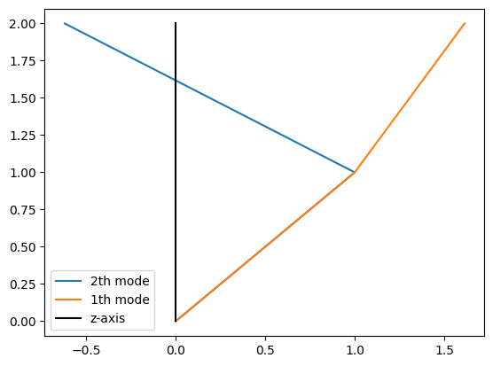
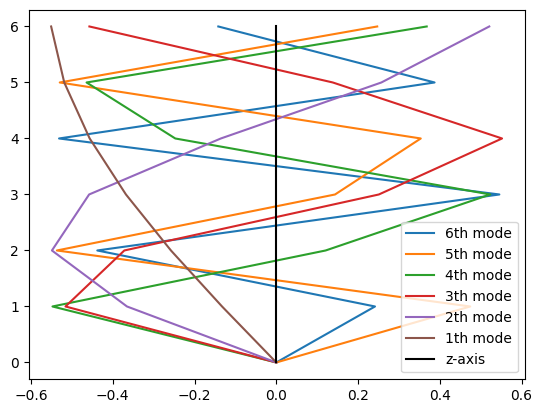
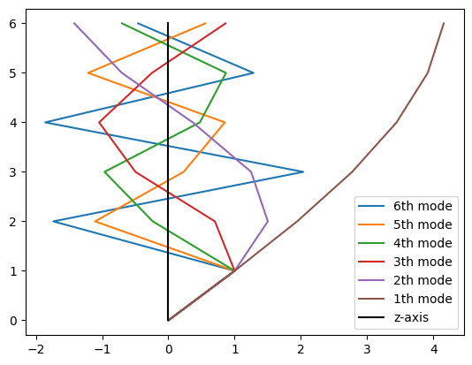
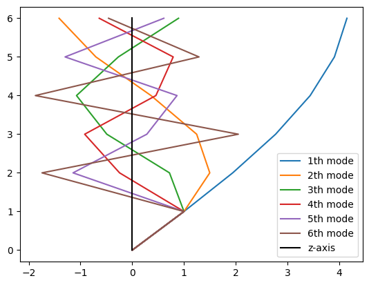

Requirement already satisfied: matplotlib in ./env/lib/python3.8/site-packages (3.6.3)
Requirement already satisfied: packaging>=20.0 in ./env/lib/python3.8/site-packages (from matplotlib) (22.0)
Requirement already satisfied: cycler>=0.10 in ./env/lib/python3.8/site-packages (from matplotlib) (0.11.0)
Requirement already satisfied: python-dateutil>=2.7 in ./env/lib/python3.8/site-packages (from matplotlib) (2.8.2)
Requirement already satisfied: kiwisolver>=1.0.1 in ./env/lib/python3.8/site-packages (from matplotlib) (1.4.4)
Requirement already satisfied: pyparsing>=2.2.1 in ./env/lib/python3.8/site-packages (from matplotlib) (3.0.9)
Requirement already satisfied: contourpy>=1.0.1 in ./env/lib/python3.8/site-packages (from matplotlib) (1.0.7)
Requirement already satisfied: fonttools>=4.22.0 in ./env/lib/python3.8/site-packages (from matplotlib) (4.38.0)
Requirement already satisfied: pillow>=6.2.0 in ./env/lib/python3.8/site-packages (from matplotlib) (9.4.0)
Requirement already satisfied: numpy>=1.19 in ./env/lib/python3.8/site-packages (from matplotlib) (1.24.0)
Requirement already satisfied: six>=1.5 in ./env/lib/python3.8/site-packages (from python-dateutil>=2.7->matplotlib) (1.16.0)
レポート3
def gausselimination_withpivot(n,A,b):
x = np.zeros(n)
Aorg = np.copy(A)
borg = np.copy(b)
#前進消去
for j in range(n):
#ピポット選択
if A[j][j] == 0:
list = [A[i][j] for i in range(j+1,n)]
abs_list = [abs(i) for i in list]
m = abs_list.index(max(abs_list))
p = m + j + 1
#交換
b[j],b[p] = b[p],b[j]
for c in range(n):
A[j][c],A[p][c] = A[p][c],A[j][c]
for i in range(j+1,n,1):
coe=-A[i][j]/A[j][j]
for k in range(j,n,1):
A[i][k]+=coe*A[j][k]
b[i]+=coe*b[j]
#後退代入・結果出力
for j in range(n-1,-1,-1):
btmp=b[j]
for i in range(n-1,j,-1):
btmp -= A[j][i]*x[i]
x[j]=btmp/A[j][j]
return xEPSILON = 0.0001
def fill_eigenlist(mat_to_solve_in,is_inv=False):
n_size_in = len(mat_to_solve_in)
EValues = [0 for x in range(n_size_in)] # list for eigenvalues
EVectors = [ np.zeros(n_size_in) for x in range(n_size_in) ] # list for eigenvectors
# print('Evectors')
# print(EVectors)
EV_list_in:list = list()
for i in range(n_size_in):
if is_inv:
eigen = calc_eigen_inv(mat_to_solve_in,EVectors)
else :
eigen = calc_eigen_conv(mat_to_solve_in,EVectors)
EVectors[i] = eigen['vector']
EValues[i] = eigen['value']
to_append = {
'value':eigen['value'],
'vector':eigen['vector']
}
EV_list_in.append(to_append)
# print(eigen)
# print("EVectors[0]")
# print(EVectors[0])
# print('Evectors')
# print(EVectors)
# eigen = calc_eigen_conv(mat_to_solve_in,EVectors)
EV_dict_in = {
'values':EValues,
'vectors':EVectors
}
return EV_dict_in,EV_list_in
def normarize_vecter(vector_in):
n_length_in = len(vector_in)
answer_in = np.zeros(n_length_in)
first_elem = vector_in[0]
for i,elements in enumerate(vector_in):
answer_in[i] = vector_in[i] / first_elem
return answer_in
def protter(EV_list_in,COORD_in,is_inv=False):
n_size_in = len(EV_list_in)
for i,ei in enumerate(EV_list_in):
vec = [0]
normed_vec = normarize_vecter(ei['vector'])
for element in normed_vec:
vec.append(element)
if is_inv:
mode_num = i + 1
else:
mode_num = n_size_in - i
plt.plot(vec,COORD_in,label=f"{mode_num}th mode")
print(f"{mode_num}th mode:\n\tcharactaristic frequency\t:{math.sqrt(-ei['value'])}\n\teigan value\t\t\t:{ei['value']},\n\teigan vector\t\t\t:{normed_vec} ")
def calc_eigen_conv(mat_to_solve_in,EVectors_in:list):
n_size_in = len(mat_to_solve_in)
y_in = np.random.rand(n_size_in)
Ayj = mat_to_solve_in @ y_in
y_in = (Ayj)/(np.linalg.norm(Ayj))
u_in = np.dot(Ayj,y_in)
u_error_rate = 100
while u_error_rate > EPSILON:
u_formar = u_in
y_formar = y_in
Ayj = mat_to_solve_in @ y_formar
frac = Ayj # yjを求める分数の分母
for xj in EVectors_in:
frac-= (np.dot(xj,Ayj))*xj
y_in = (frac)/(np.linalg.norm(frac))
u_in = np.dot(mat_to_solve_in @ y_in , y_in)
u_error_rate = abs(-1 + u_in/u_formar )
# print(f'u_error_rate\t:{u_error_rate}')
# print(f'u_in\t\t:{u_in}')
# print(f'u_error_rate:{u_error_rate}')
eigenvalue = u_in
eigenvector = np.zeros(n_size_in)
# print(eigenvalue)
# for i,yelement in enumerate(y_in):
# eigenvector[i] = (yelement/y_in[0])
eigenvector = y_in
# print('eigenvector')
# print(eigenvector)
# print('y_in')
# print(y_in)
# print('y_in[0]:')
# print(y_in[0])
eigen = {
'value':eigenvalue,
'vector':eigenvector
}
return eigen
def inv_mat(A):
n_size_of_A = len(A)
X = np.eye(n_size_of_A)
#まずAを上三角行列にする。
A = A.astype('float64')
for p in range(n_size_of_A):
pivot = A[p][p]
for j in range(p+1, n_size_of_A):
coef = A[j][p] / pivot
A[j] -= A[p] * coef
X[j] -= X[p] * coef
#途中経過確認。
#print(A)
#print(X)
#対角成分を1にする。
for i in range(n_size_of_A):
X[i] /= A[i][i]
A[i] /= A[i][i]
#途中経過確認。
#print(A)
#print(X)
#答えを出す。
for i in range(n_size_of_A-1,0,-1):
for j in range(i):
X[j] -= X[i] * A[j][i]
A[j][i] = 0
return X
def calc_eigen_inv(mat_to_solve_in,EVectors_in:list):
n_size_in = len(mat_to_solve_in)
e_i = np.zeros(n_size_in) # base vector
mat_inverse = inv_mat(mat_to_solve_in)
# print('mat_inverse')
# print(mat_inverse)
# print('conv@inv')
# print(mat_inverse @ mat_to_solve)
eigen = calc_eigen_conv(mat_inverse,EVectors_in)
eigen['value'] = 1 / eigen['value']
return eigen
mat_to_solve = np.array(([-2, 1],[ 1,-1]))
EV_dict,EV_list = fill_eigenlist(mat_to_solve)
print(EV_dict)
print(EV_list)
# print((-3-math.sqrt(5))/2)
# print((-3+math.sqrt(5))/2)
{'values': [-2.6180301931881704, -0.38196980681182946], 'vectors': [array([ 0.85133504, -0.52462239]), array([-0.52462239, -0.85133504])]}
[{'value': -2.6180301931881704, 'vector': array([ 0.85133504, -0.52462239])}, {'value': -0.38196980681182946, 'vector': array([-0.52462239, -0.85133504])}]
(1) n=2のmode
mat_to_solve = np.array(([-2, 1],[ 1,-1]))
EV_dict,EV_list = fill_eigenlist(mat_to_solve)
# print(EV_dict)
# print(EV_list)
n_size_in = len(mat_to_solve)
COORD = [num for num in range(n_size_in + 1)]
protter(EV_list,COORD)
# plt.plot([0,-0.85099324, 0.52517665],[0,1,2] )
plt.plot([0,0],[0,2],color='#000000',label='z-axis')
plt.legend()
plt.show()2th mode:
charactaristic frequency :1.6180329348616178
eigan value :-2.6180305782969007,
eigan vector :[ 1. -0.61974201]
1th mode:
charactaristic frequency :0.6180367478581669
eigan value :-0.38196942170309933,
eigan vector :[1. 1.61357466]

2th mode: charactaristic frequency :1.6180325349761728 eigan value :-2.6180292842414197, eigan vector :[ 0.85141248 -0.5244967 ] 1th mode: charactaristic frequency :0.6180377947654826 eigan value :-0.38197071575858077, eigan vector :[-0.5244967 -0.85141248]
(2) n=6の場合
mat_to_solve = np.array(([-2, 1, 0, 0, 0, 0,],[ 1,-2, 1, 0, 0, 0],[ 0, 1,-2, 1, 0, 0],[ 0, 0, 1,-2, 1, 0],[ 0, 0, 0, 1,-2, 1],[ 0, 0, 0, 0, 1,-1]))
EV_dict,EV_list = fill_eigenlist(mat_to_solve)
# print(EV_dict)
# print(EV_list)
n_size_in = len(mat_to_solve)
COORD = [num for num in range(n_size_in + 1)]
for i,ei in enumerate(EV_list):
vec = [0]
for element in ei['vector']:
vec.append(element)
plt.plot(vec,COORD,label=f"{n_size_in - i}th mode")
print(f"{n_size_in - i}th mode:\n\tcharactaristic frequency\t:{math.sqrt(-ei['value'])}\n\teigan value\t\t\t:{ei['value']},\n\teigan vector\t\t\t:{ei['vector']} ")
# plt.plot([0,-0.85099324, 0.52517665],[0,1,2] )
plt.plot([0,0],[0,n_size_in],color='#000000',label='z-axis')
plt.legend()
plt.show()6th mode:
charactaristic frequency :1.9416774631433877
eigan value :-3.770111370878942,
eigan vector :[ 0.24140602 -0.43780104 0.54559405 -0.53139041 0.38715877 -0.14181976]
5th mode:
charactaristic frequency :1.7710696900605294
eigan value :-3.1366878470510993,
eigan vector :[ 0.47437864 -0.53664458 0.14366648 0.35336543 -0.52966601 0.24682837]
4th mode:
charactaristic frequency :1.4970773730478377
eigan value :-2.241240660891815,
eigan vector :[-0.5475147 0.12066518 0.52335571 -0.2471019 -0.46408552 0.3678745 ]
3th mode:
charactaristic frequency :1.136153470330008
eigan value :-1.2908447081429202,
eigan vector :[-0.51567342 -0.37173685 0.25081003 0.55219357 0.13818274 -0.45713757]
2th mode:
charactaristic frequency :0.7092242510686345
eigan value :-0.5029990383038655,
eigan vector :[-0.36522424 -0.54880278 -0.45785099 -0.13563647 0.25700452 0.52091329]
1th mode:
charactaristic frequency :0.24107338038729548
eigan value :-0.05811637473135765,
eigan vector :[-0.13269465 -0.25770135 -0.36776716 -0.45648961 -0.51869147 -0.5507321 ]

ベクトル1つ目の成分が＋1になるように正規化をすると以下のようになった。
mat_to_solve = np.array(([-2, 1, 0, 0, 0, 0,],[ 1,-2, 1, 0, 0, 0],[ 0, 1,-2, 1, 0, 0],[ 0, 0, 1,-2, 1, 0],[ 0, 0, 0, 1,-2, 1],[ 0, 0, 0, 0, 1,-1]))
EV_dict,EV_list = fill_eigenlist(mat_to_solve)
# print(EV_dict)
# print(EV_list)
n_size_in = len(mat_to_solve)
COORD = [num for num in range(n_size_in + 1)]
protter(EV_list,COORD)
# plt.plot([0,-0.85099324, 0.52517665],[0,1,2] )
plt.plot([0,0],[0,n_size_in],color='#000000',label='z-axis')
plt.legend()
plt.show()6th mode:
charactaristic frequency :1.9417103499794979
eigan value :-3.770239083217504,
eigan vector :[ 1. -1.73621378 2.03532815 -1.85817707 1.28327267 -0.45608552]
5th mode:
charactaristic frequency :1.7710196976398414
eigan value :-3.136510769428315,
eigan vector :[ 1. -1.10638505 0.23075585 0.85147137 -1.21106562 0.55751139]
4th mode:
charactaristic frequency :1.4970967083112257
eigan value :-2.241298554036307,
eigan vector :[ 1. -0.23543719 -0.96347467 0.47458665 0.86901323 -0.69921739]
3th mode:
charactaristic frequency :1.136156083745234
eigan value :-1.2908506466313074,
eigan vector :[ 1. 0.70166628 -0.49721844 -1.04474302 -0.24773071 0.86204474]
2th mode:
charactaristic frequency :0.7092140086992829
eigan value :-0.5029845101353065,
eigan vector :[ 1. 1.50024423 1.24819287 0.3669257 -0.70192915 -1.41824728]
1th mode:
charactaristic frequency :0.24107350860528026
eigan value :-0.05811643655126014,
eigan vector :[1. 1.94237258 2.77259788 3.44230617 3.91214419 4.15427749]

(3) n=6 を逆べき乗法で解く
mat_to_solve = np.array(([-2, 1, 0, 0, 0, 0,],[ 1,-2, 1, 0, 0, 0],[ 0, 1,-2, 1, 0, 0],[ 0, 0, 1,-2, 1, 0],[ 0, 0, 0, 1,-2, 1],[ 0, 0, 0, 0, 1,-1]))
EV_dict,EV_list = fill_eigenlist(mat_to_solve,True)
# print(EV_dict)
# print(EV_list)
n_size_in = len(mat_to_solve)
COORD = [num for num in range(n_size_in + 1)]
protter(EV_list,COORD,True)
# plt.plot([0,-0.85099324, 0.52517665],[0,1,2] )
plt.plot([0,0],[0,n_size_in],color='#000000',label='z-axis')
plt.legend()
plt.show()1th mode:
charactaristic frequency :0.24107336116062464
eigan value :-0.05811636546128096,
eigan vector :[1. 1.9416943 2.77054064 3.43861922 3.90706299 4.1484292 ]
2th mode:
charactaristic frequency :0.7092100661053015
eigan value :-0.5029789178650861,
eigan vector :[ 1. 1.49844322 1.24495595 0.36289182 -0.70236142 -1.41316049]
3th mode:
charactaristic frequency :1.1361515628796055
eigan value :-1.2908403738337704,
eigan vector :[ 1. 0.71967034 -0.49105408 -1.07675385 -0.26766164 0.89465739]
4th mode:
charactaristic frequency :1.4970277334726472
eigan value :-2.2410920347862513,
eigan vector :[ 1. -0.24493419 -0.91886138 0.4574455 0.79176941 -0.63762537]
5th mode:
charactaristic frequency :1.7709623316877243
eigan value :-3.136307580256821,
eigan vector :[ 1. -1.14382766 0.28229339 0.86529306 -1.29747842 0.6105383 ]
6th mode:
charactaristic frequency :1.9416872296857703
eigan value :-3.7701492979248017,
eigan vector :[ 1. -1.74366313 2.05003232 -1.8722423 1.29016137 -0.45724548]
